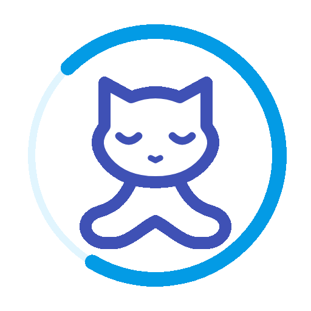
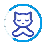
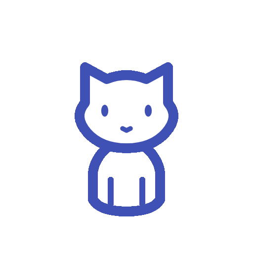

01 · Continuous blue aura
The cat stays in meditation while a blue arc rotates continuously clockwise. Four-second seamless loop.


GitHub ManagerSelected concept · Zen Loop
Real animated GIFs, exported with transparent backgrounds. Both repeat continuously.
The cat stays in meditation while a blue arc rotates continuously clockwise. Four-second seamless loop.


GitHub ManagerThe tail-free cat closes its eyes, settles into a lotus pose, then emits three slow pulses of blue rays. Six-second loop.

 GitHub Manager
GitHub Manager